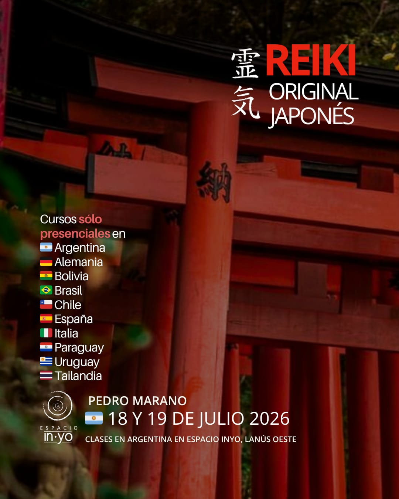
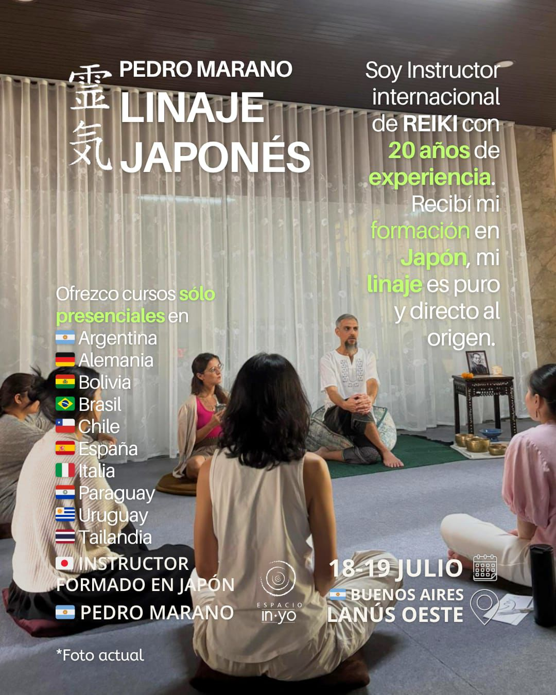

Linaje Directo Gendai Reiki Ho
Seminarios presenciales de meditación y sanación dictados por Pedro Marano. Una experiencia de aprendizaje auténtica, tradicional y transformadora en el corazón de Lanús.
Próximo Encuentro: Sábado 18 y Domingo 19 de Julio, 2026

Es el primer instructor argentino con grado de "Shihan" (Maestro) recibido en Japón de manos de Hiroshi Doi Sensei. Miembro activo de la Gendai Reiki Network de Japón, Pedro se ha dedicado a la enseñanza y difusión del Reiki original desde el año 2005, manteniendo la pureza de la técnica que aprendió en la cuna de esta disciplina.
¿Cómo se dividen los niveles?
Sábado 18 de Julio | 10:30 a 15:00 hs.
A través de Shoden te convertirás en un canal de Reiki puro. Aprenderás a utilizar la energía Reiki para purificar tu sistema nervioso y mente. Incluye técnicas de meditación, respiración, visualización y armonización.
$158.000.-
Reservar Nivel 1Sábado 18 de Julio | 15:00 a 20:00 hs.
Con Okuden se potencia el uso de Reiki. Se aprenden los símbolos y herramientas sagradas para enviar energía trascendiendo el tiempo y el espacio (pasado, futuro y distancia).
$188.000.-
Reservar Nivel 2Domingo 19 de Julio | 10:30 a 15:30 hs.
Maestría Personal. Se completa el aprendizaje de las técnicas de sanación y expansión de la conciencia que conforman el sistema tradicional.
$198.000.-
Reservar Nivel 3Sábado 18/07 (10:30 a 20:00 hs)
Domingo 19/07 (10:30 a 15:30 hs)
$488.000.-
Reservar Formación IntegralGendai Reiki Ho es la disciplina que Sensei Hiroshi Doi creó combinando técnicas del Dento Reiki (Tradicional de 1922) con aportes occidentales útiles. Sensei Doi es el único miembro activo de la Usui Reiki Ryoho Gakkai que enseña fuera de la asociación.
Fortalece el sistema inmunológico, regula presión y colesterol. Ayuda en la recuperación post-quirúrgica.
Reduce el estrés, calma la ansiedad y ayuda a sanar heridas afectivas. Estimula la claridad mental.
Amplía la Conciencia de la Universalidad y aporta confianza en el proceso de la vida.
Sobre la preparación previa:
Sobre la cursada:
Se entrega manual oficial de Gendai Reiki Ho y certificado con aval del linaje japonés.
En Gokuikaiden proponemos un entrenamiento muy flexible en el que la persona va incorporando las herramientas necesarias para sentir seguridad con la tarea que va a emprender como Instructor.
Aprendizaje individual. En este proceso el aspirante a instructor aprende las sintonizaciones de todos los niveles. Recibe la “iniciación integrada”, que habilita energéticamente a enseñar las técnicas.
Recibe los manuales actualizados, la conexión directa con Japón y el certificado de “Shihan en Gendai Reiki Ho”, obteniendo el aval de maestría docente.
Recibirá el 5to lugar en el linaje de esta sagrada tradición de maestros:
Los seminarios se dictan en un ambiente diseñado para la práctica del silencio y la sanación. Nos encontramos en una ubicación central y de fácil acceso en Lanús Oeste.
Carlos Tejedor 335,
Lanús Oeste Centro, Buenos Aires